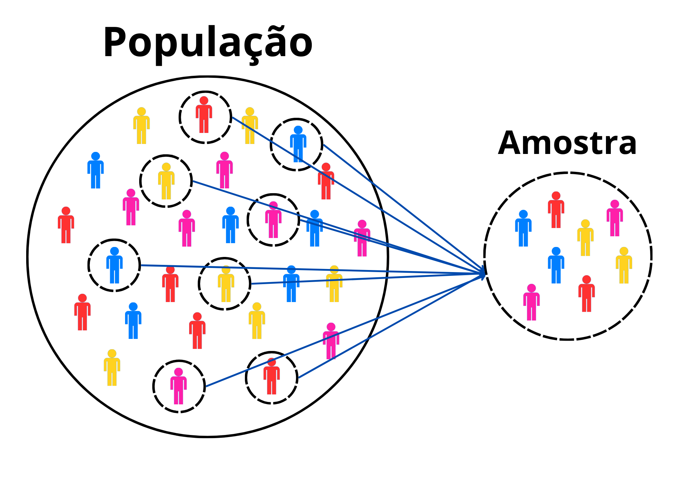
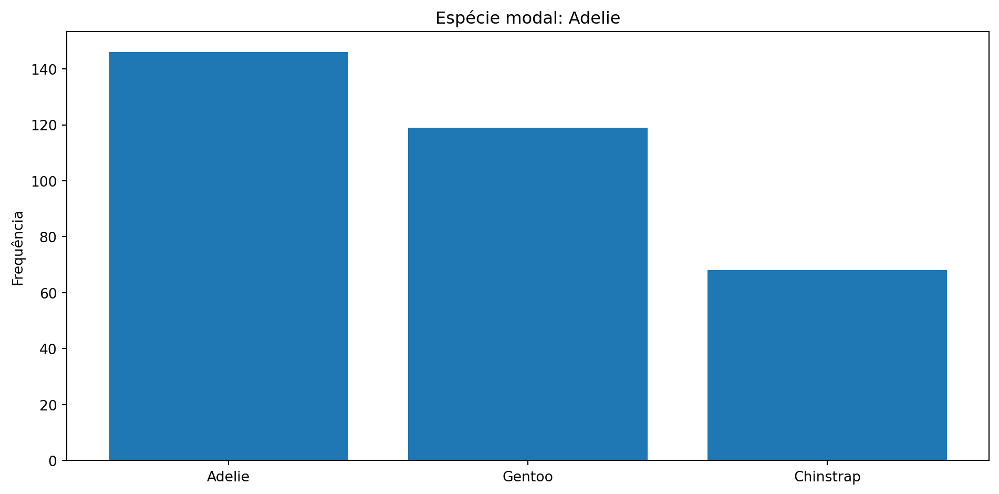
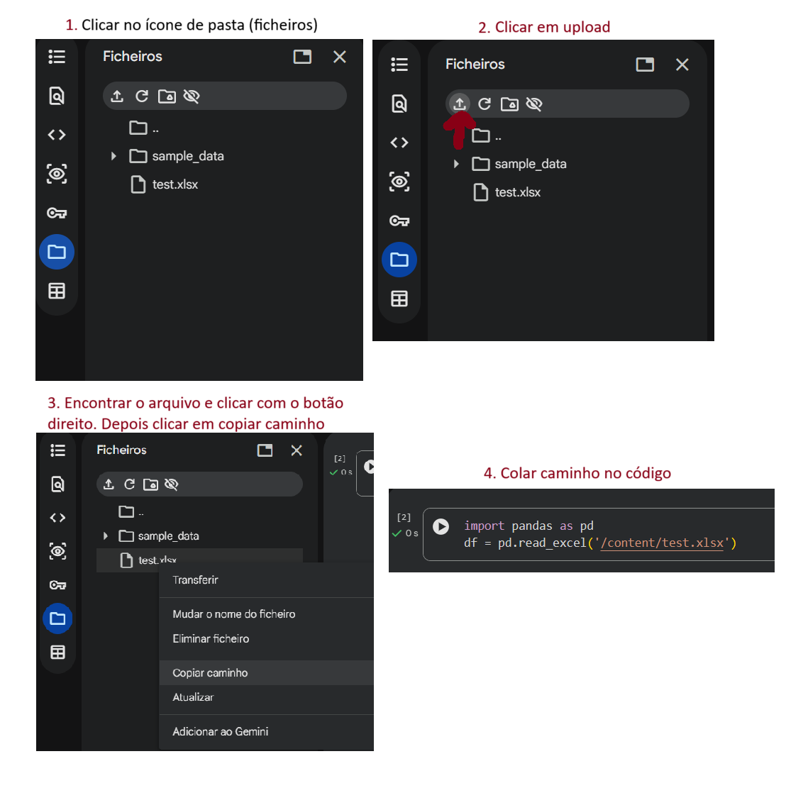

Dia 02 - Introdução a Estatística
Introdução à Estatística com Python
2026-02-10
Estatística e Análise de Dados
Contexto
A ciência de dados é uma área interdisciplinar que combina:
- Estatística — coleta, organização e análise de dados
- Ciência da Computação — algoritmos eficientes e escaláveis
Seu objetivo é extrair informações relevantes a partir de dados para gerar conhecimento e apoiar decisões.
Nota
“Data is not an end in itself but a means to an end” — Faraway & Augustin (2018)
Por que Estatística?
Dentro da ciência de dados, a estatística fornece os fundamentos para:
- Compreender e resumir dados
- Identificar padrões e incertezas
- Sustentar conclusões de forma rigorosa
Por isso a estatística é abordada como base essencial para a análise de dados com Python.
Nota
Python é a ferramenta. Estatística é o método. Dados são o meio.
Duas Áreas da Estatística
Estatística Descritiva
Voltada para resumo e apresentação dos dados observados.
Utiliza:
- Medidas numéricas (média, mediana, variância)
- Gráficos e tabelas
- Visualizações
Objetivo: Proporcionar visão clara e organizada da informação disponível.
Estatística Inferencial
Utiliza dados amostrados para fazer inferências sobre uma população maior.
Utiliza:
- Testes de hipóteses
- Intervalos de confiança
- Modelos probabilísticos
Objetivo: Estimar parâmetros e tomar decisões com base em evidências quantitativas.
Por Onde Começar?
Estatística Descritiva
↓
Entender dados (organizar, visualizar, descrever)
↓
Estatística Inferencial
↓
Modelagem Estatística
↓
Machine LearningDica
Comece pela estatística descritiva! Ela fornece a base sólida necessária para entender conceitos mais abstratos.
Tipos de Variáveis
Qualitativas (Categóricas)
Representam categorias ou qualidades:
- Nominais: sem ordem
- Exemplos: cor dos olhos, profissão, estado civil
- Ordinais: com ordem
- Exemplos: nível de escolaridade, classificação de produto (⭐⭐⭐⭐⭐)
Quantitativas (Numéricas)
Representam quantidades ou valores numéricos:
- Discretas: números inteiros
- Exemplos: número de filhos, chamadas recebidas, plantas em uma parcela
- Contínuas: números reais
- Exemplos: peso, altura, temperatura, tempo de reação
Identificando Tipos de Variáveis
A correta identificação é fundamental para escolher os métodos de análise adequados!
População vs Amostra
Definições
- População: conjunto completo de elementos que se deseja estudar
- Amostra: subconjunto representativo da população sobre o qual se realizam cálculos

Parâmetros vs Estatísticas
| Termo | Definição | Exemplo |
|---|---|---|
| Parâmetro | Medida calculada na população | μ (média populacional) |
| Estatística | Medida calculada na amostra | x̄ (média amostral) |
A amostra fornece estimativas dos valores populacionais verdadeiros.
Importante
A amostra deve ser representativa e aleatória para que as inferências sejam válidas!
Dataset Penguins 🐧

Sobre o Dataset
O conjunto de dados Penguins contém informações sobre três espécies de pinguins coletadas nas ilhas do arquipélago Palmer, na Antártica.
Inclui características físicas como:
- Comprimento e profundidade do bico
- Comprimento da nadadeira
- Peso corporal
- Espécie, ilha e sexo
Nota
Este dataset é amplamente usado no ensino de estatística como alternativa ao clássico dataset Iris!
Carregando e Explorando os Dados
Estrutura do Dataset
<class 'pandas.core.frame.DataFrame'>
RangeIndex: 344 entries, 0 to 343
Data columns (total 7 columns):
# Column Non-Null Count Dtype
--- ------ -------------- -----
0 species 344 non-null object
1 island 344 non-null object
2 bill_length_mm 342 non-null float64
3 bill_depth_mm 342 non-null float64
4 flipper_length_mm 342 non-null float64
5 body_mass_g 342 non-null float64
6 sex 333 non-null object
dtypes: float64(4), object(3)
memory usage: 18.9+ KBPrimeiras Linhas
Visualizando as 5 primeiras linhas:| species | island | bill_length_mm | bill_depth_mm | flipper_length_mm | body_mass_g | sex | |
|---|---|---|---|---|---|---|---|
| 0 | Adelie | Torgersen | 39.1 | 18.7 | 181.0 | 3750.0 | Male |
| 1 | Adelie | Torgersen | 39.5 | 17.4 | 186.0 | 3800.0 | Female |
| 2 | Adelie | Torgersen | 40.3 | 18.0 | 195.0 | 3250.0 | Female |
| 3 | Adelie | Torgersen | NaN | NaN | NaN | NaN | NaN |
| 4 | Adelie | Torgersen | 36.7 | 19.3 | 193.0 | 3450.0 | Female |
Colunas Disponíveis
Estatísticas Descritivas
| bill_length_mm | bill_depth_mm | flipper_length_mm | body_mass_g | |
|---|---|---|---|---|
| count | 342.000000 | 342.000000 | 342.000000 | 342.000000 |
| mean | 43.921930 | 17.151170 | 200.915205 | 4201.754386 |
| std | 5.459584 | 1.974793 | 14.061714 | 801.954536 |
| min | 32.100000 | 13.100000 | 172.000000 | 2700.000000 |
| 25% | 39.225000 | 15.600000 | 190.000000 | 3550.000000 |
| 50% | 44.450000 | 17.300000 | 197.000000 | 4050.000000 |
| 75% | 48.500000 | 18.700000 | 213.000000 | 4750.000000 |
| max | 59.600000 | 21.500000 | 231.000000 | 6300.000000 |
Estatísticas Descritivas
| species | island | bill_length_mm | bill_depth_mm | flipper_length_mm | body_mass_g | sex | |
|---|---|---|---|---|---|---|---|
| count | 344 | 344 | 342.000000 | 342.000000 | 342.000000 | 342.000000 | 333 |
| unique | 3 | 3 | NaN | NaN | NaN | NaN | 2 |
| top | Adelie | Biscoe | NaN | NaN | NaN | NaN | Male |
| freq | 152 | 168 | NaN | NaN | NaN | NaN | 168 |
| mean | NaN | NaN | 43.921930 | 17.151170 | 200.915205 | 4201.754386 | NaN |
| std | NaN | NaN | 5.459584 | 1.974793 | 14.061714 | 801.954536 | NaN |
| min | NaN | NaN | 32.100000 | 13.100000 | 172.000000 | 2700.000000 | NaN |
| 25% | NaN | NaN | 39.225000 | 15.600000 | 190.000000 | 3550.000000 | NaN |
| 50% | NaN | NaN | 44.450000 | 17.300000 | 197.000000 | 4050.000000 | NaN |
| 75% | NaN | NaN | 48.500000 | 18.700000 | 213.000000 | 4750.000000 | NaN |
| max | NaN | NaN | 59.600000 | 21.500000 | 231.000000 | 6300.000000 | NaN |
Verificando Dados Faltantes
Contagem de valores ausentes em cada coluna:
species 0
island 0
bill_length_mm 2
bill_depth_mm 2
flipper_length_mm 2
body_mass_g 2
sex 11
dtype: int64Aviso
⚠️ Há valores ausentes (NaN) em várias colunas! Precisamos tratá-los antes de prosseguir.
Limpeza dos Dados
Após limpeza:
Total de linhas: 333
Contagem de valores ausentes:
species 0
island 0
bill_length_mm 0
bill_depth_mm 0
flipper_length_mm 0
body_mass_g 0
sex 0
dtype: int64Dataset Limpo
| species | island | bill_length_mm | bill_depth_mm | flipper_length_mm | body_mass_g | sex | |
|---|---|---|---|---|---|---|---|
| 0 | Adelie | Torgersen | 39.1 | 18.7 | 181.0 | 3750.0 | Male |
| 1 | Adelie | Torgersen | 39.5 | 17.4 | 186.0 | 3800.0 | Female |
| 2 | Adelie | Torgersen | 40.3 | 18.0 | 195.0 | 3250.0 | Female |
| 4 | Adelie | Torgersen | 36.7 | 19.3 | 193.0 | 3450.0 | Female |
| 5 | Adelie | Torgersen | 39.3 | 20.6 | 190.0 | 3650.0 | Male |
Dica
Agora temos um dataset limpo e pronto para análise estatística! 🐧
Medidas de Tendência Central
Média Aritmética
Representa o valor “típico” de um conjunto de dados.
Fórmula (Amostra):
\[\bar{x} = \frac{1}{n} \sum_{i=1}^{n} x_i\]
Características:
- Mais comum de tendência central
- Sensível a valores extremos (outliers)
- Fácil de calcular e interpretar
Exemplo: Média
Comprimento médio da nadadeira: 200.97 mmImportante
O método .dropna() remove linhas com valores ausentes (NaN). Dados incompletos podem distorcer nossas análises!
Mediana
Valor central de um conjunto de dados ordenados.
Características:
- Não depende se é população ou amostra
- Resistente a outliers
- Necessita ordenação dos dados
Fórmula:
\[ \text{Mediana} = \begin{cases} x_{\frac{n+1}{2}}, & \text{se } n \text{ é ímpar} \\ \\ \dfrac{x_{\frac{n}{2}} + x_{\frac{n}{2}+1}}{2}, & \text{se } n \text{ é par} \end{cases} \]
Mediana — Exemplo
Número par de observações (n = 10)
[2, 4, 6, 8, 10, 12, 14, 16, 18, 20]Número ímpar de observações (n = 11)
[1, 3, 5, 7, 9, 11, 13, 15, 17, 19, 21]Exemplo: Mediana
Comprimento mediano da nadadeira: 197.00 mmVisualização dos dados ordenados:
172.0, ..., 197.0, 197.0, 197.0, 197.0, 197.0, ..., 231.0Média vs Mediana
Exemplo com valor extremo (outlier)
Média: 22.6
Mediana: 14.5Nota
- A média é puxada por valores extremos
- A mediana representa melhor o “centro” quando há outliers
👉 Em dados reais (salários, renda, tempo, medidas biológicas), olhar só a média pode enganar.
Moda
Valor que ocorre com maior frequência em um conjunto de dados.
Características:
- O valor “mais provável” de ser amostrado
- Pode não existir ou haver múltiplas modas
- Aplicável a dados qualitativos e quantitativos
Fórmula \[ \text{Moda} = \arg\max_x f(x) \]
Exemplo: Moda
import pandas as pd
import seaborn as sns
penguins = sns.load_dataset('penguins').dropna()
moda_especie = penguins['species'].mode()[0]
print(f"Espécie modal (mais frequente): {moda_especie}")
print("\nFrequências:")
print(penguins['species'].value_counts())
qtd = (penguins['species'] == moda_especie).sum()
print(f"Espécie modal: {moda_especie} - {qtd} amostras")Espécie modal (mais frequente): Adelie
Frequências:
species
Adelie 146
Gentoo 119
Chinstrap 68
Name: count, dtype: int64
Espécie modal: Adelie - 146 amostras
Comparação: Média, Mediana e Moda
Medidas de Dispersão
Por que medir dispersão?
Dados com a mesma média podem ter distribuições muito diferentes!
Medidas de dispersão quantificam o grau de variação dos dados em torno da média.
Amplitude
Medida mais simples: distância entre o maior e menor valor.
Fórmula:
\[A = x_{máx} - x_{mín}\]
Características:
- Simples e rápida
- Altamente sensível a outliers
- Ignora toda a distribuição intermediária
Exemplo: Amplitude
Amplitude: 59.00 mm
Mínimo: 172.00 mm
Máximo: 231.00 mmVariância
Mede a dispersão dos dados em torno da média. É a média dos quadrados dos desvios.
Fórmula (Amostra):
\[s^2 = \frac{1}{n-1} \sum_{i=1}^{n} (x_i - \bar{x})^2\]
Características:
- Amplamente utilizada em análises estatísticas
- Expressa em unidades ao quadrado
- Usa n-1 (correção de Bessel) para não tendenciosidade
Atenção ao ddof
O parâmetro ddof (delta degrees of freedom) define o denominador da variância.
ddof = 0→ variância populacional (divide por n)ddof = 1→ variância amostral (divide por n − 1)
📌 Em estatística inferencial, usamos ddof = 1
📌 Em Python, o valor padrão depende da biblioteca
| Biblioteca | Padrão |
|---|---|
pandas |
ddof = 1 |
numpy |
ddof = 0 |
Exemplo: Variância
Desvio Padrão
Raiz quadrada da variância. Mede o afastamento médio dos dados em relação à média.
Fórmula (Amostra):
\[s = \sqrt{\frac{1}{n-1} \sum_{i=1}^{n} (x_i - \bar{x})^2}\]
Características:
- Mesma unidade dos dados originais
- Preferido em muitas aplicações
- Maior desvio padrão = maior dispersão
Dica
Por ser a raiz da variância, o desvio padrão retorna à escala original dos dados, tornando a medida de dispersão mais intuitiva e comparável.
Exemplo: Desvio Padrão
Medidas de Posição
Quantis
Dividem um conjunto de dados ordenado em partes iguais.
O p-ésimo quantil \(Q_p\) (onde \(0 < p < 1\)) é o valor abaixo do qual encontram-se \(100p\%\) dos dados.
Interpretação:
- \(Q_{0.25}\): 25% dos dados abaixo deste valor
- \(Q_{0.50}\): 50% dos dados abaixo (é a mediana)
- \(Q_{0.75}\): 75% dos dados abaixo deste valor
Quartis
Quantis específicos que dividem os dados em 4 partes iguais.
- \(Q_1\) (1º quartil): \(Q_{0.25}\)
- \(Q_2\) (2º quartil): \(Q_{0.50}\) = Mediana
- \(Q_3\) (3º quartil): \(Q_{0.75}\)
Exemplo: Quartis
penguins = sns.load_dataset('penguins').dropna()
q1 = penguins['flipper_length_mm'].quantile(0.25)
q2 = penguins['flipper_length_mm'].quantile(0.50) # mediana
q3 = penguins['flipper_length_mm'].quantile(0.75)
print(f"Q1 (25%): {q1:.2f} mm")
print(f"Q2 (50%, Mediana): {q2:.2f} mm")
print(f"Q3 (75%): {q3:.2f} mm")Q1 (25%): 190.00 mm
Q2 (50%, Mediana): 197.00 mm
Q3 (75%): 213.00 mmBoxplot (Diagrama de Caixa)
Visualiza a distribuição dos dados usando quartis:
- Caixa: contém os 50% centrais dos dados (Q1 a Q3)
- Linha dentro da caixa: mediana (Q2)
- Bigodes: estendem-se até mínimo e máximo
- Pontos isolados: outliers
Nota
Boxplots são essenciais para identificar valores discrepantes e padrões na distribuição!
Exemplo: Boxplot em Python
- Visualiza quartis
- Identifica outliers
- Compara distribuições entre os dados

Como o boxplot identifica outliers
O boxplot usa os quartis e o intervalo interquartil (IQR). \[ IQR = Q_3 - Q_1 \]
Onde: \(Q_1\) → 1º quartil (25% dos dados) e \(Q_3\) → 3º quartil (75% dos dados)
\[ \text{Limite inferior} = Q_1 - 1.5 \times IQR \]
\[ \text{Limite superior} = Q_3 + 1.5 \times IQR \]
👉 Valores fora desses limites aparecem como outliers no gráfico.
Nota
⚠️ Outlier não é erro automaticamente.
Ele indica um valor incomum que merece investigação.
Distribuição de Frequências
Para Dados Qualitativos
Tabela de Frequência:
| Categoria | Frequência Absoluta | Frequência Relativa (%) |
|---|---|---|
| Azul | 9 | 45% |
| Verde | 6 | 30% |
| Vermelho | 5 | 25% |
| Total | 20 | 100% |
Para Dados Quantitativos
Tabela de Frequência em Intervalos:
| Intervalo (cm) | f | F | Freq. Relativa (%) |
|---|---|---|---|
| [160 - 165[ | 3 | 3 | 15% |
| [165 - 170[ | 3 | 6 | 15% |
| [170 - 175[ | 4 | 10 | 20% |
| [175 - 180[ | 2 | 12 | 10% |
| [180 - 185[ | 3 | 15 | 15% |
| [185 - 190[ | 4 | 19 | 20% |
| Total | 20 | – | 100% |
Criando Tabela de Frequência em Python
freq_abs = penguins['species'].value_counts()
freq_rel = penguins['species'].value_counts(normalize=True) * 100
tabela_especies = pd.DataFrame({
"Espécie": freq_abs.index,
"Frequência Absoluta": freq_abs.values,
"Frequência Relativa (%)": freq_rel.round(1).values
})
intervalos = [170, 180, 190, 200, 210, 220, 230]
tabela_nadadeira = (
pd.cut(penguins['flipper_length_mm'], bins=intervalos)
.value_counts()
.sort_index()
.reset_index()
.rename(columns={
'index': 'Intervalo da Nadadeira (mm)',
'count': 'Frequência'
})
)Visualizações
Gráfico de Barras
Para variáveis qualitativas

Histograma
Erro Padrão e Estimativa
Erro Padrão (Standard Error)
Medida da variabilidade da estimativa pontual entre diferentes amostras.
Fórmula:
\[SE = \frac{s}{\sqrt{n}}\]
Onde: - s = desvio padrão da amostra - n = tamanho da amostra
Interpretação: Quanto menor o SE, mais precisa é a estimativa!
Exemplo: Erro Padrão
import numpy as np
penguins = sns.load_dataset('penguins').dropna()
s = penguins['flipper_length_mm'].std() #devio padrão
n = len(penguins['flipper_length_mm']) #tamanho
se = s / np.sqrt(n) #SE = desvio padrão / raiz quadrada de n
print(f"Desvio padrão: {s:.2f} mm")
print(f"Tamanho da amostra: {n}")
print(f"Erro padrão: {se:.2f} mm")
# Calculando o Erro Padrão diretamente
se_pandas = penguins['flipper_length_mm'].sem()
print(f"Erro padrão (via Pandas): {se_pandas:.2f} mm")Desvio padrão: 14.02 mm
Tamanho da amostra: 333
Erro padrão: 0.77 mm
Erro padrão (via Pandas): 0.77 mmEstimativa Pontual
Um valor único calculado a partir da amostra que serve como “melhor palpite” para um parâmetro populacional.
Exemplos:
- Média amostral x̄ é estimativa pontual de μ (média populacional)
- Variância amostral s² é estimativa de σ² (variância populacional)
Nota
As medidas amostrais são estimativas dos parâmetros populacionais verdadeiros!
Intervalo de Confiança
Faixa de valores construída em torno da estimativa pontual, com certa probabilidade (nível de confiança) de conter o parâmetro populacional.
Fórmula (amostras pequenas ou variância desconhecida):
\[\bar{x} \pm 1.96 \times SE\]
Importante
Fórmula anterior assumindo que os valores seguem uma distribuição normal
Fórmula mais correta e geral é \[\bar{x} \pm t_{\alpha/2, n-1} \times SE\]
Exemplo: Intervalo de Confiança
media = penguins['flipper_length_mm'].mean() #média
s = penguins['flipper_length_mm'].std() #devio padrão
se = penguins['flipper_length_mm'].sem()
ic_inf = media - 1.96 * se
ic_sup = media + 1.96 * se
print(f"Média: {media:.2f} mm")
print(f"Erro padrão: {se:.2f} mm")
print(f"Intervalo de Confiança 95%: ({ic_inf:.2f}, {ic_sup:.2f}) mm")Média: 200.97 mm
Erro padrão: 0.77 mm
Intervalo de Confiança 95%: (199.46, 202.47) mmExemplo: Intervalo de Confiança
Visualização gráfica
Interpretação do Intervalo de Confiança
Um intervalo de confiança de 95% significa:
“Se repetíssemos o processo de amostragem muitas vezes e calculássemos um IC para cada amostra, aproximadamente 95% desses intervalos conteriam o verdadeiro parâmetro populacional.”
Aviso
⚠️ NÃO é correto dizer: “há 95% de chance de que μ está neste intervalo” (μ é fixo, não aleatório!)
Resumo da Aula
Conceitos-chave
✓ Estatística = combinação de métodos estatísticos + algoritmos computacionais
✓ Descritiva: resumir e apresentar dados
✓ Inferencial: fazer conclusões sobre população com base na amostra
✓ Tipos de variáveis: qualitativas e quantitativas
✓ População vs Amostra: parâmetros vs estatísticas
✓ Medidas de tendência central: média, mediana, moda
✓ Medidas de dispersão: amplitude, variância, desvio padrão
✓ Medidas de posição: quartis, boxplot
✓ Erro padrão e IC: quantificam precisão das estimativas
Fim da Aula
Próxima aula: Distribuições de probabilidade e testes de hipóteses!
Obrigado!
Referências
MORETTIN, Pedro Alberto; SINGER, Júlio da Motta. Estatística e ciência de dados. 2025.
Exercícios 📝
📊 Exercício: Análise Exploratória de Dados
Escolha um dataset (Iris do Seaborn, um CSV ou Excel próprio) e realize as seguintes análises.
Sugestão: Se não tiver um dataset próprio, use o Iris do Seaborn:
Importante
Lembre-se de substituir 'coluna_numerica' e 'coluna_categorica' pelos nomes reais das colunas presentes no seu dataset!
Importando Datasets
Opção 1: Carregar do Seaborn
Opção 2: Importar CSV
Dica
Você pode usar qualquer dataset CSV de sua preferência! Basta substituir o caminho do arquivo.
Opção 3: Importar Excel (XLSX)
Usando o upload de arquivos no Colab
💡 Antes de Começar
Faça a limpeza e verificação inicial dos dados:
Verifique valores ausentes:
Trate dados faltantes (se necessário):
Verifique duplicatas:
Exercício 1: Média por Categoria
Objetivo: Calcular a média de uma variável numérica para cada categoria.
Exemplo (Iris): Calcular o comprimento médio da sépala (sepal_length) para cada espécie.
DICA: Utilize .groupby() para agrupar por uma coluna categórica:
Exercício 2: Separar Dados por Categoria
Objetivo: Filtrar e analisar dados de uma categoria específica.
Exemplo (Iris): Separar apenas os dados da espécie Setosa.
DICA: Use filtros booleanos:
Exercício 3: Medidas de Tendência Central
Objetivo: Calcular média, mediana e desvio padrão de uma variável numérica.
DICA: Use métodos diretos do Pandas:
Exercício 4: Comparação entre Categorias
Objetivo: Comparar uma variável numérica entre diferentes categorias.
DICA: Agrupe por categoria e calcule múltiplas estatísticas:
Bônus: Visualização 📊
Após completar os exercícios, tente criar:
Um boxplot comparando variáveis numéricas entre categorias
Um histograma da distribuição de uma variável
Um gráfico de barras com as médias calculadas